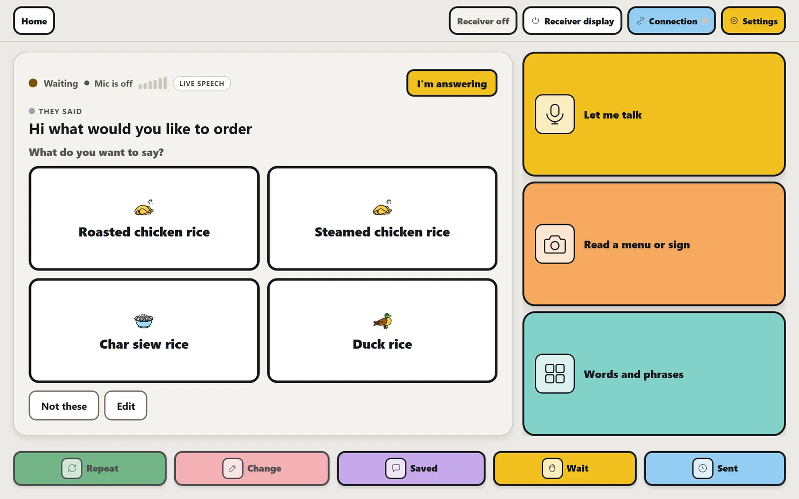
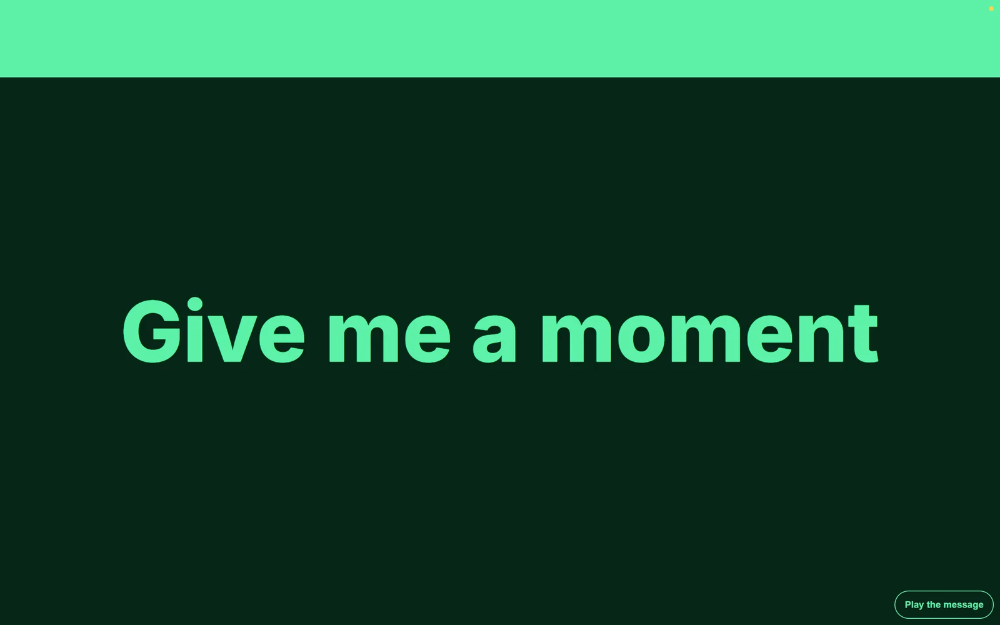
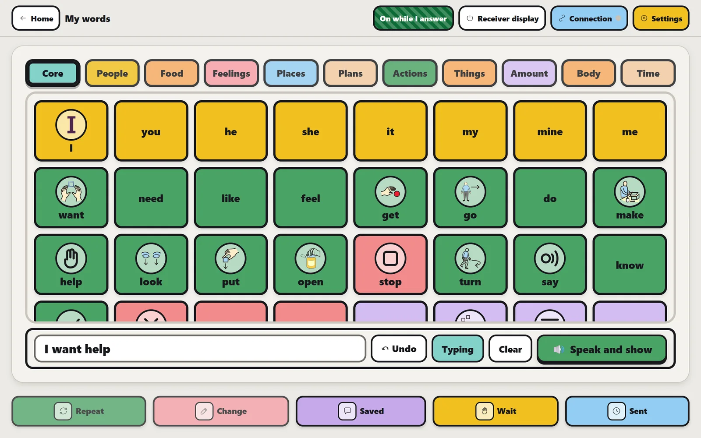

Tamil Murasu featured MEANT alongside student projects using artificial intelligence for social impact.
← All work02 of 06Dell InnovateFest 2026 · Second runner-up
MEANT
Helping AAC users reply before the conversation moves on.
AAC (augmentative and alternative communication) users often lose their turn while they compose a reply. MEANT listens to the conversation and prepares a few likely replies. The user still chooses every word, and can drop back to their usual board or typing at any time.
- My role
- UI and UX, the Singaporean TTS voice, and presenting the build
- Result
- Second runner-up, polytechnic category · S$3,000
- Stack
- On-device AI on a Dell GB10 · Singaporean TTS
- Partner
- SPD Ltd, Singapore
- Status
- Competition build · repository private

One turn
The whole product is three seconds of a conversation.
- The room moves onTurn Claim tells the other person an answer is coming, so the conversation holds instead of rolling past.
- A reply is offeredLocal context on a Dell GB10 produces timely suggestions. Nothing leaves the device.
- The user authors itThey choose a suggestion, type, or use their AAC board. Nothing is spoken without a tap.
The voice
It had to sound like it came from here.
A generic text-to-speech voice makes a Singaporean user sound like someone else. Building the Singaporean TTS voice was my part of the build, alongside the interface and the demo we presented.


Captured from the running tablet client with the hawker demo pack. The repository itself stays private.
If the AI stops
It degrades into something that still works.
If the AI layer goes down, the AAC board and typing still work. A communication aid that fails closed is not a communication aid.
My part
The screens a person actually uses, and a demo that could not stall.
Boards you can read at a glance
Coloured the AAC boards and gave each word a picture by what kind of word it is, using an openly licensed symbol set.
No dead ends
Search across the whole AAC vocabulary, so a wrong prediction never leaves the user stuck.
Setup that fits the person
Setup-wizard steps, including the screen ruler and the microphone permission, so the prompt comes during setup, not mid-conversation.
A demo that could not stall
Scripted the turn we played on stage, and fixed the gaps that could stop it: a stuck mic button, a silent send, a camera that showed only a black box.
From my commits to the MEANT repository, which is private, so this is described without code.
In the press
Tamil Murasu featured MEANT.